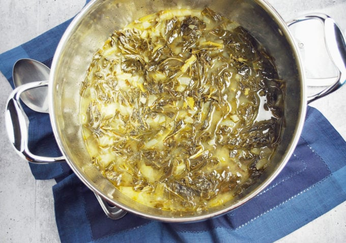

Southern Greens

Sweet and spicy collard greens, just the way nana made 'em!
This delicious dish pairs well with outdoor BBQ or any dish with smoky and rich flavors.
Making it is super easy as well, making it a top notch choice for a quick side if you forgot to bring one to the company picnic.
Nana's greens will always be better, but this recipe comes super close in my book, i hope your family enjoys it as much as mine does!
Ingredients:
- 1 can of Glory Collard Greens
- 1 can sliced mushrooms
- 1/2 stick of butter
- 2 TBSP garlic powder
- 2 tsp Cayenne Pepper
- 2 TBSP white vinegar
- Pinch of brown sugar
Steps:
- Bring 1 can of Glory Collard Greens and mushrooms to a simmer.
- Add Butter, Garlic Powder, Cayenne, and Brown sugar.
- Simmer for about 5 minutes, or until well heated throughout.
- Reduce heat and allow to cool to a serving temperature.
- Splash with white vinegar, adding to taste if needed.
- Enjoy!